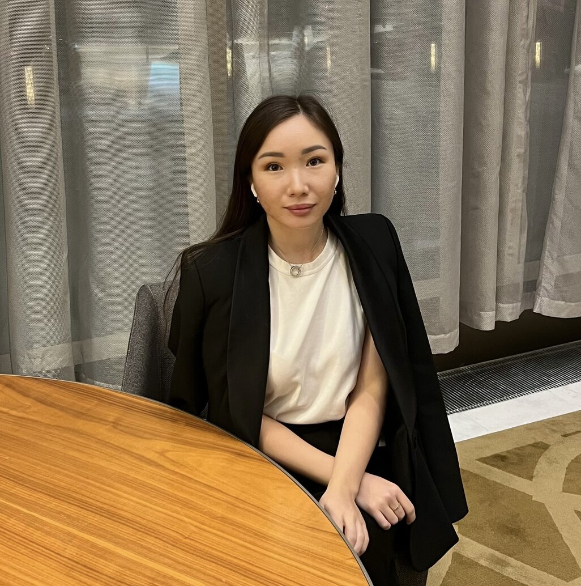

Work Experience
On this page I wish to share my feelings about some positions I hold. The broader list of all working experience I had is available by the link.
As a student with a future degree in international relations, I went to the Ministry of Foreign Affairs of Kazakhstan to get some experience. Indeed, it was an interesting experience. My internship was not limited by sorting papers, instead I was writing papers myself and talked to many ambassadors myself. My instructor trusted me responsible tasks as I proved that I am worthy. At the end of my internship I was offered to work at the Ministry and the Embassy of Korea. Unfortunately, I needed to refuse as I could not quit my studies.
Being a research assistant was a worthy experience. Since August 2021 I was fortunate to be a research assistant for two professors and in one international project.
Working as a trainer for the indepdent elections' observers was the most responsible work I had. I was responsible for the knowledge of 100 people who attended my courses on elections' observation.
My Resume
Sberbank, Bank and Financial Services
Intern, Human-resources
At the beginning of the internship, I was responsible for cold calling of possible future employees, later I was conducting interviews and recruited new staff for different positions.
Erkindik Qanaty, Youth Human Rights NGO
Trainer for the independent elections’ observers
Conducted three courses and have trained roughly 100 people, empowering them to participate in the parliamentary elections.
CoronaNet International Research Project
Research Assistant
Gathered, analysed, and interpreted up-to-date information, policies issued, and news related to the pandemic
Ministry of Foreign Affairs of the Republic of Kazakhstan
Intern
Wrote official letters and notes intended for the Ministries of Kazakhstan, state officials, Ambassadors in Kazakh, Russian, and English languages. Participated in the organization of the 18th round of the international meeting on Syria.
Nazarbayev University
Research Assistant
Research on the Implementation of UN SDGs in corporations around Kazakhstan. The goal is to better understand employees' perceptions of SDG goals and their implementation. I am responsible for data collection and analysis of survey answers.
Nazarbayev University
Research Assistant
Research on relation between tourism and COVID-19 pandemics, the goal of the paper is to analyze how the countries are dealing with the crisis. I am responsible for data collection.